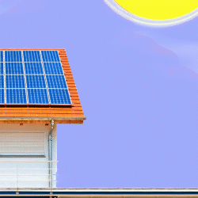

Resultado:
O que é a luz?
A luz é uma energia radioativa visivel (dependendo do seu aspectro) que no caso terrestre, tem o sol como maior fonte de luz. Ela se propaga por ondas eletromagnéticas sem precisar de um meio físico. Essas ondas se propagam pelo espaço em uma velocidade absurda (1.079.252.848,8 km/h) até chegarem em na atmosfera, onde ela é refletida, iluminando tudos os cantos possiveis, e por fim em nossas retinas, o que nos permite enchergar a luz, mas isso só é possível também porque o aspectro da luz é formada por várias cores, e cada onda tem sua frequência e comprimento de onda.
A luz é feita de fótons, que são particulas elementares da luz (elas não tem massa, mas tem muita energia) mediadoras da força de luz eletromagnéticas. Apesar de não ter massa nula, a luz é incapaz de atravessar a matéria, e é isso que formam as sombras. Como a luz não atravessa, não chega luz atrás do objeto. Quando a mesma atinge um corpo, ela é refletida para outros pontos em um caminho linear, já que a luz não faz curva (exceto, claro, a curva do espaço-tempo).
O que é a Irradiaçâo Solar?
A irradiação é o processo onde a energia é emitida e propagada na forma de ondas eletromagnéticas sem a necessidade de um material para ocorrer. E por sua vez, ela é a única forma de propagação no vácuo.
Ela pode ocorrer de forma natural, como por exemplo o aquecimento da Terra pelo Sol, ou induzida como em tratamentos médicos que usam radiação e luzes infravermelho. 
Vale lembrar que nem todas as ondas eletromagnéticas transportam calor, como as ondas de radio ou a luz visível. As ondas próximas do infravermelho são mais eficientes para a transferência de calor do que as outras demais. Além disso, a maneira como as ondas eletromagnéticas interagem com a matéria depende da sua frequência.
Outra coisa que é importante salientar é que, a radiação e a irradiação apesar de estarem intrinsecamente relacionadas, elas possuem diferenças. A radiação diz respeito a transmissão de energia através do espaço, já a irradiação trata da exposição dessa radiação, como por exemplo a Terra que está exposta a radiação solar.
Por que o angulo é importante?
O ângulo de inclinação consiste num parâmetro importante pois influência na absorção da irradiação solar direta, e na reflexão da irradiação incidente na superfície do módulo, ou seja, interfere de forma direta na produção de energia elétrica e, consequentemente, no desempenho do sistema.
O que é um gnômon?
O gnômon é um instrumento astronômico que consiste numa haste vertical que projeta uma sombra, permitindo a determinação de referências temporais e espaciais
Como medir a irradiação?
tan θ = cateto oposto/cateto adjacente
O valor obtido é verificado na tabela trigonométrica.
Após todo esse processo, é usado a fórmula:
Irradiação incidente = radiação solar * tan θ (Tangente do ângulo encontrado)
Mapa de Sombra: